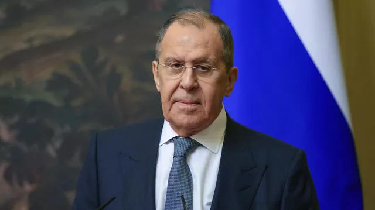
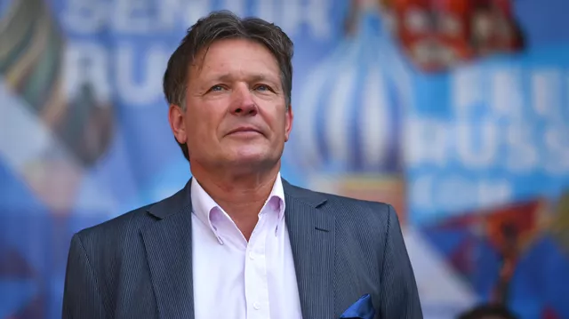
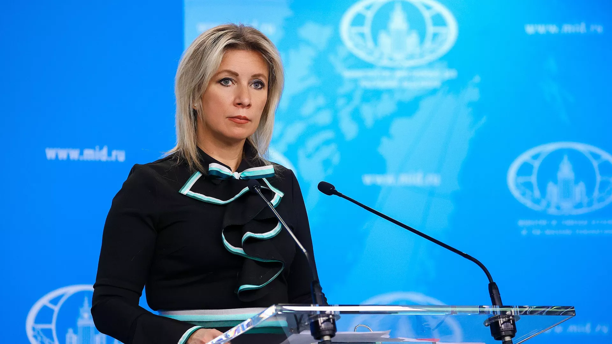
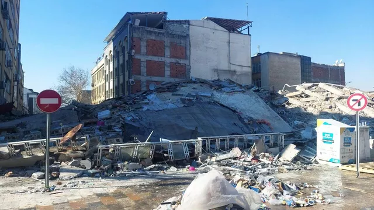
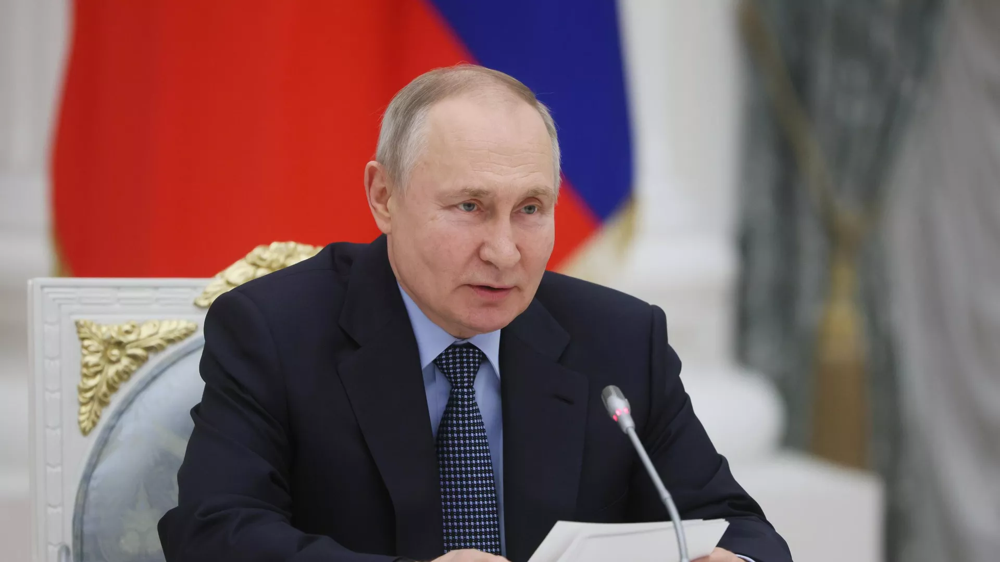

Лавров раскрыл одну из главных задач МИД
МОСКВА, 10 фев - РИА Новости. В обновленной концепции внешней политики РФ будет отражена задача по формированию благоприятных внешних условий для внутреннего развития страны, заявил глава российского МИД Сергей Лавров.
"На нас - ответственность за претворение тех решений, которое принимает руководство страны на внешнеполитическом направлении - прежде всего, для формирования благоприятной внешней среды для обеспечения динамичного внутреннего развития России. Именно на это нас ориентирует президент. Такая задача закреплена в доктринальных документах и обязательно будет отражена в обновленной концепции внешней политики, работа над которой сейчас завершается", - сказал он в ходе торжественного собрания по случаю Дня дипломатического работника.
В четверг заместитель министра иностранных дел РФ Сергей Рябков заявлял, что обновленная концепция внешней политики России в ближайшее время будет опубликована. Пресс-секретарь главы государства Дмитрий Песков в пятницу заявил, что концепция будет утверждена президентом России Владимиром Путиным в ближайшее время.

Путин назначил нового посла на Кубе
МОСКВА, 10 фев - РИА Новости. Президент России Владимир Путин назначил послом РФ на Кубе Виктора Коронелли, от обязанностей освобожден Андрей Гуськов, соответствующий указ опубликован на официальном интернет-портале правовой информации.
"Назначить Коронелли Виктора Викторовича чрезвычайным и полномочным послом Российской Федерации в Республике Куба", - говорится в сообщении.
Другим указом президент освободил Гуськова от обязанностей чрезвычайного и полномочного посла РФ в Республике Куба и Содружестве Багамских Островов по совместительству.

МИД назвал слова Писториуса о руководстве России недопустимыми
МОСКВА, 10 фев - РИА Новости. Официальный представитель МИД России Мария Захарова назвала слова министра обороны Германии Бориса Писториуса о том, что мир без президента РФ Владимира Путина был бы лучше, недопустимыми.
Посетивший во вторник Киев глава оборонного ведомства Германии Борис Писториус в интервью газете Bild заявил, что мир без Владимира Путина был бы лучше.
"Министр обороны этой страны Писториус абсолютно недвусмысленно намекнул на желательность вообще в принципе устранения российского руководства. Такое заявление абсолютно недопустимо для официальных лиц любой страны, которая является членом международного сообщества.", - сказала Захарова в ходе брифинга.

В России не будут объявлять траур из-за землетрясения в Турции
МОСКВА, 10 фев - РИА Новости. Россия не будет объявлять траур по жертвам землетрясения в Турции, такой практики нет, но продолжит оказывать ей помощь в ликвидации последствий трагедии, заявил пресс-секретарь президента РФ Дмитрий Песков.
"Такой практики нет. Вы знаете, что президент России выразил соболезнования народу Турции в лице президента (Тайипа) Эрдогана, вы знаете, как Россия активно принимает участие в ликвидации последствий этого разрушительного землетрясения, в поисковых работах, опять же. Эта работа будет продолжена", - сказал Песков журналистам в ответ на вопрос, будет ли Россия объявлять траур по жертвам землетрясения в Турции.
Землетрясение магнитудой 7,7 произошло на юго-востоке Турции в понедельник утром и стало, по словам президента Тайипа Эрдогана, самым сильным с 1939 года. Позже в тот же день случилось еще одно землетрясение магнитудой 7,6. По последним данным, число погибших превысило 16,5 тысячи человек.

В Кремле прокомментировали возможное лишение Путина французского ордена
МОСКВА, 10 фев - РИА Новости. Пресс-секретарь президента РФ Дмитрий Песков заявил, что для Владимира Путина не будет проблемой лишение его ордена Почетного легиона, так как у него сейчас другие приоритетные вопросы.
Президент Франции Эммануэль Макрон ранее не исключил возможности лишить Путина звания кавалера большого креста ордена Почетного легиона.
"Оно (общение двух президентов – ред.), действительно, не сильно интенсивное. Не думаю, что это будет какой-то проблемой для президента Путина, и что это может стать для него приоритетным вопросом.
У него другие приоритетные вопросы, о которых хорошо известно гражданам России", - сказал Песков журналистам, отвечая на вопрос, насколько это решение обидно президента и скажется ли оно на общении с Макроном.